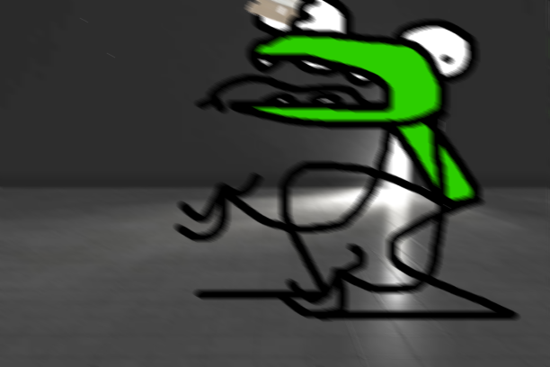
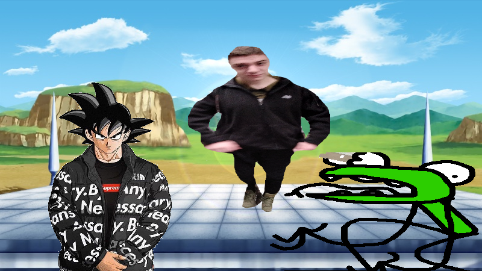

Page 4
Kervin had never seen someone this devious, and he seemed so helpless upon first glance. He had to do something. Kervin then remembered that he was texting God last night on Discord. If he could maybe find a computer then he could possibly squad up against Nadeem. It just so happened that Nadeem was in possession of a Vintage Commodore VIC-20. At this point Kervin assumed that Nadeem had some sort of dangerous obsession. The room was dimly lit; and happened to have a smoke machine for dramatic effect, so Kervin struggled to make it to the computer. Nadeem continued to fire. Kervin began to grow weak, but alas he had made it. He logged onto Discord and messaged God to hit him up. The worst thing that could happen happened. GOD WAS ON DO NOT DISTURB. That was it.. Kervin was doomed.
Nadeem Sassin was running out of Logan Ranneys, if only he had stocked up on them at the store. This rocket launcher might run out if he doesn’t find another form of ammo. Luckily, he remembered the gummy worms that he had purchased earlier that day. They were small and durable, perfect for ammo. He dropped his rocket launcher to the floor and pulled out a rifle. Nadeem loaded the rifle with gummy worms and began to fire. Little did Nadeem know, Kervin was the 2048 Gummy Worm Eating World Champion. Kervin saw the bag being used as ammo and he prepared himself for a joyous occasion. Kervin munched on those gummy worms like there was no tomorrow. He felt a few spiders being vacuumed into the back of his throat but he couldn’t have cared less. This was life or death, and Kervin preferred the first of those two.
Nadeem took note that Kervin liked gummy worms and planned something maniacal. Nadeem loaded the rifle with tiny razor blades. Kervin was so distracted; treating this scenario like a game, that he didn’t even notice the sharp objects firing in his general direction. Kervin inhaled the razor blades. After two he felt a pain in the back of his throat. A sharp, stinging pain. He closed his mouth and began to get on his knees. The adjustment in height threw off Nadeem’s accuracy and when Nadeem fired he shot Kervin in the eye. Kervin sprawled in pain on the ground. Nadeem looked shocked, but knew it had to be done.
As he walked over to examine the body Kervin arose. He was still in perfect condition. “H-how?”, Nadeem exclaimed. Kervin then said something that nobody expected. “Goku, I have obtained drip.” Suddenly Goku appeared out of nowhere and said some kind of Japanese crap that Kervin didn’t understand. Nadeem had never liked anime, but this was Goku himself. Nadeem stood no chance. Goku was outfitted in a “By Any Means Necessary” jacket and a Supreme t-shirt underneath. “Raaagagghagghhhhhh!”, Goku stated. “GOKUUUUUU!!” In an instant Goku pinned Nadeem to a wall and shattered his skull. Nadeem had perished.
